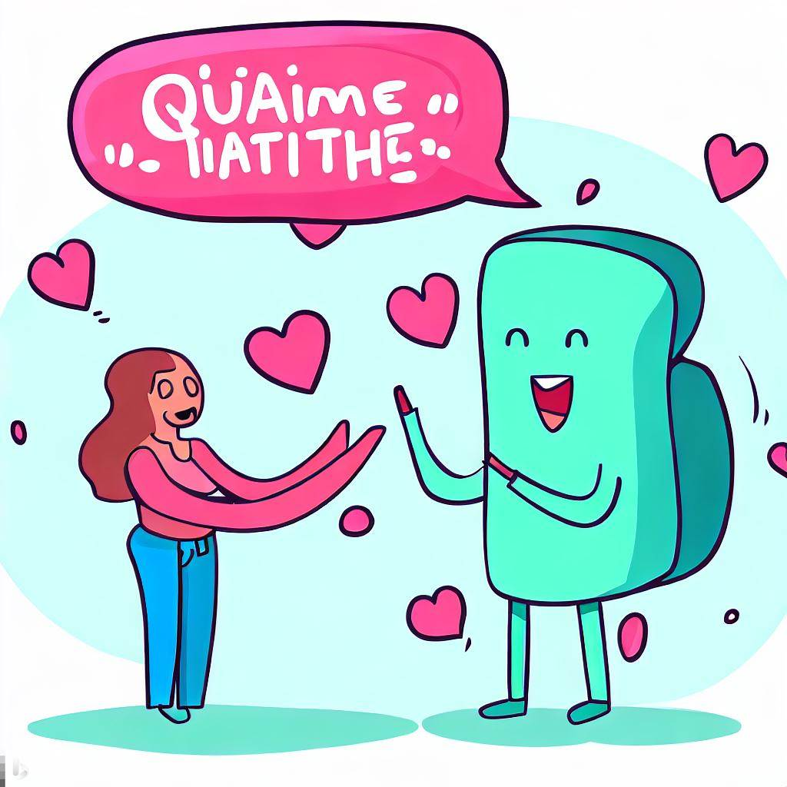
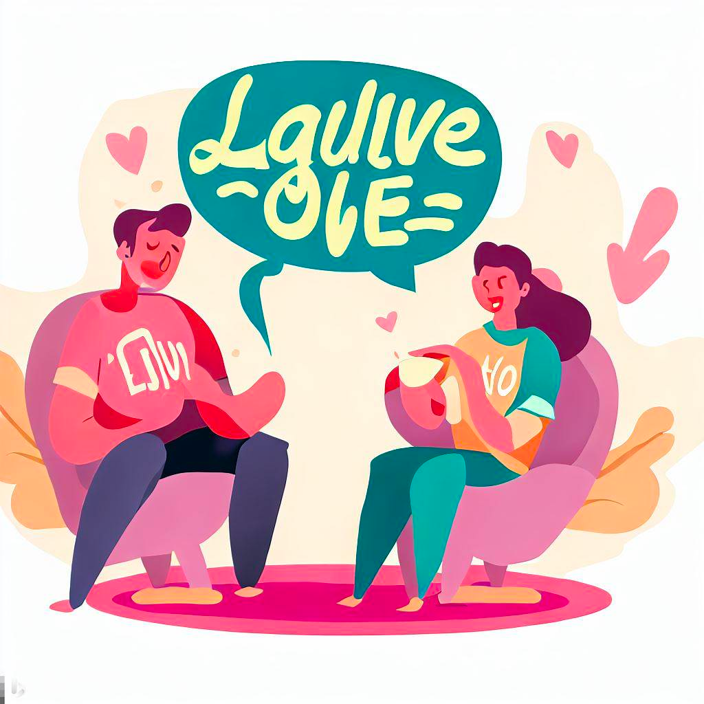
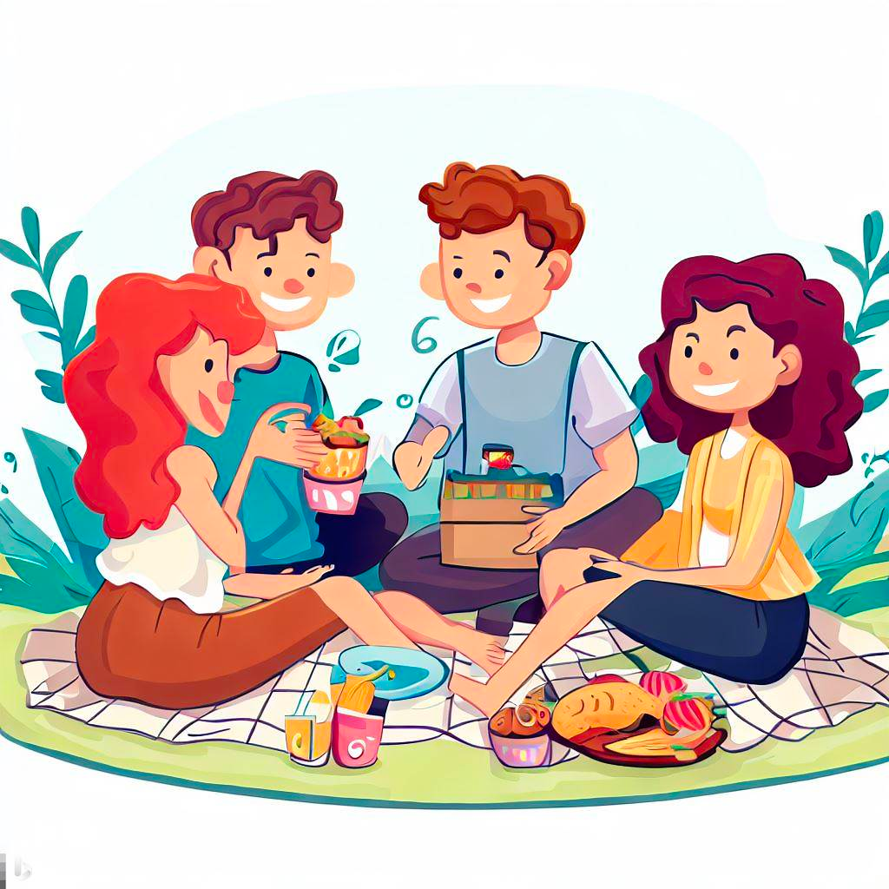
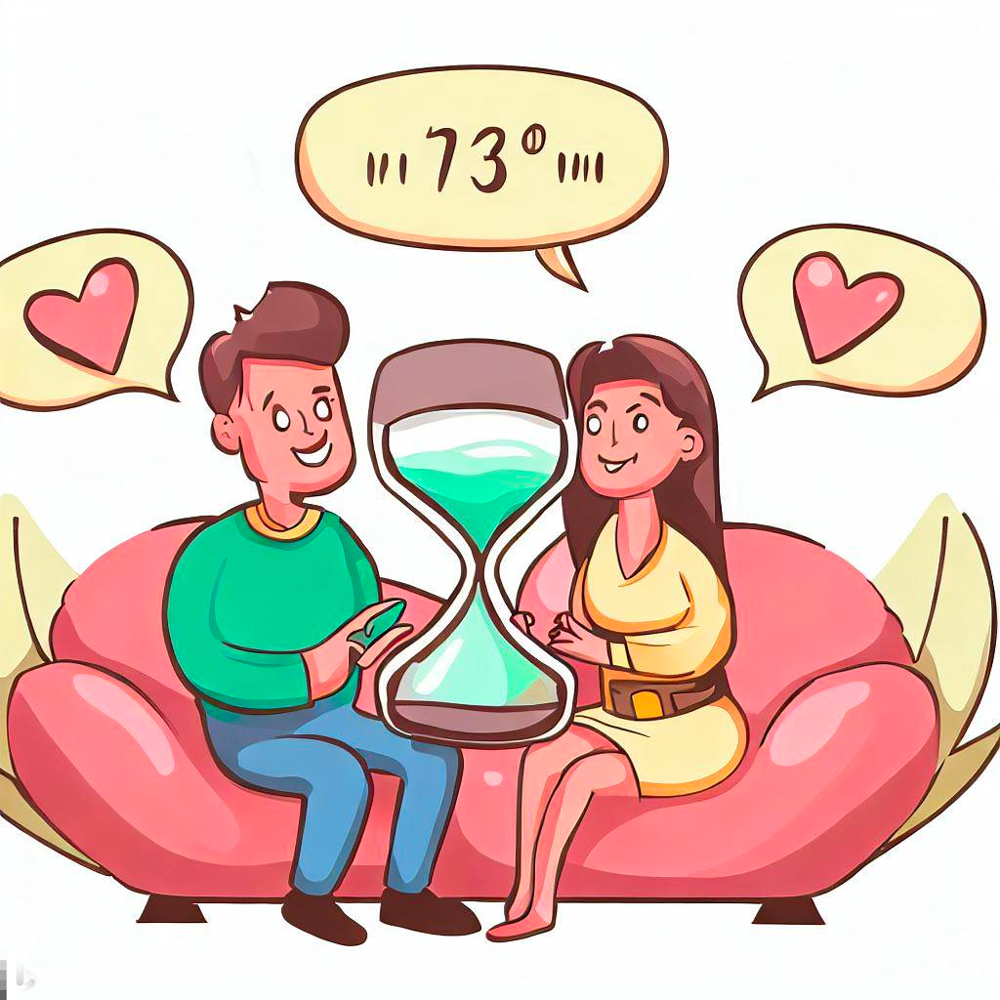

Embracing Quality Time: The Heart of Meaningful Relationships

In the bustling rhythm of today's life, carving out moments for those we cherish can be challenging yet profoundly rewarding. This brings us to the concept of the 'Quality Time' love language, one of the five identified by Dr. Gary Chapman in his seminal work on relationships. While words of affirmation focus on verbal expressions of love, quality time delves into the realm of undivided attention and shared experiences.
Understanding Quality Time as a Love Language
The Essence of Quality Time
Quality time is about giving someone your undivided attention and being fully present in moments shared together. It's not just about being in the same room; it's about focusing all your energy on your partner. This love language thrives on togetherness, deep conversation, and shared activities.
Why Quality Time Matters
In an era where digital distractions are rampant, quality time becomes a precious commodity. It’s a reaffirmation of the value we place on our relationships. It tells our partner, "You are important to me, and I choose to spend my most valuable resource – my time – with you."
How to Express Quality Time
Active Listening
Active listening is the cornerstone of quality time. It involves listening to understand, not just to respond. It’s about engaging with your partner's thoughts and feelings, showing empathy, and validating their experiences.
Shared Activities
Engaging in activities together fosters a sense of companionship and intimacy. This could be as simple as a weekly date night, a walk in the park, or trying out a new hobby together. It’s the experience and the joy of doing something together that counts.
Creating Rituals
Rituals can be daily, weekly, or monthly but should be consistent. It could be a coffee together every morning, a regular weekend getaway, or an annual vacation to a favorite spot. These rituals become sacred times, eagerly anticipated and deeply cherished.
Unplugged Time
Dedicating time without the interference of technology shows that you are fully present. This means putting away phones, turning off the TV, and eliminating other distractions to focus solely on each other.
Overcoming Challenges in Quality Time
Busy Schedules
The most common challenge to quality time is a busy schedule. It requires intentional planning and commitment to carve out time for each other. Prioritize your relationship by scheduling regular time together and sticking to it.
Long-Distance Relationships
For long-distance couples, quality time might seem like a daunting challenge. However, technology can be a boon here. Regular video calls, watching a movie together online, or playing an online game can help bridge the distance.
Different Interests
It’s natural for partners to have different interests. The key is finding a balance between participating in shared activities and respecting individual preferences. Sometimes, it's about compromising and taking turns in choosing the activity.
Enhancing Quality Time
Deep Conversations
Conversations are the lifeline of quality time. Discuss your dreams, fears, daily experiences, and feelings. These conversations strengthen the emotional bond and deepen your understanding of each other.
Learning Together
Taking a class or learning a new skill together not only makes for enjoyable quality time but also helps you grow as individuals and as a couple.
Surprises and Spontaneity
Occasionally, surprise your partner with a spontaneous plan or a thoughtful gesture. It keeps the relationship fresh and exciting.
Quality Time in Different Stages of Relationship
Dating/Courtship
During the early stages, quality time helps in understanding each other’s worlds. It’s about exploring common interests and building a foundation for the relationship.
Married/Long-Term Relationships
For couples in long-term relationships, quality time helps in nurturing and rejuvenating the bond. It’s about continuing to grow together and enjoying each other’s company amidst life’s routines.
Creating Rituals
Rituals can be daily, weekly, or monthly but should be consistent. It could be a coffee together every morning, a regular weekend getaway, or an annual vacation to a favorite spot. These rituals become sacred times, eagerly anticipated and deeply cherished.
Parenting
For parents, quality time might require more creativity. It’s about finding moments amidst the chaos – like a brief coffee date when the kids are at school or a quiet conversation after the kids are asleep.
Conclusion
Quality time is a powerful love language that can transform relationships. It’s about making your partner feel valued and loved through focused attention and shared experiences. In our fast-paced world, dedicating time to nurture relationships is vital. Remember, it’s not about the quantity but the quality of time spent together that deepens the bond and keeps the spark alive in any relationship.